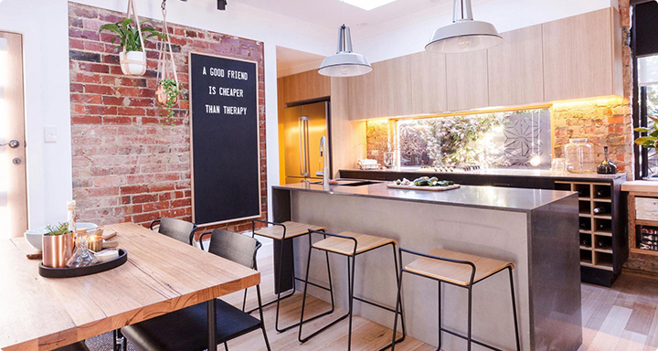

橙汁芦荟是一道美味的菜肴 这道菜主要是由橙子和芦荟制作而成。芦荟多糖的免疫复活作用可提高机体的抗病能力，在治疗高血压、痛风、哮喘、癌症等慢性疾病的过程中配合使用，可加速机体康复...  烹饪佳肴 工艺：炒 原料：橙子（鲜） 3个芦荟 调料：盐3克 胡椒粉1克 淀粉(玉米)10克 酱油10克 猪油35克肉（五花肉）150克 里脊切片上浆备用。 加入香菇、木耳煸炒均匀。加入酱油、料酒、糖、葱姜煸炒。 香菇和木耳提前泡发，香菇切片。 锅中放油勺热，放入肉片滑散。 最后加入黄瓜片快速翻炒即可。大功告成，快叫来亲朋好友一起品尝美味吧！ 温馨提示：脾胃寒湿、气滞或皮肤骚痒病患者忌食！ 鱼香肉丝的讨论 一朶太阳椛 刀工还得加油！#晚餐 2015年10月21日#50 TFBFV 刀工还得加油！#晚餐 2015年10月21日#50 查看全部9份作品